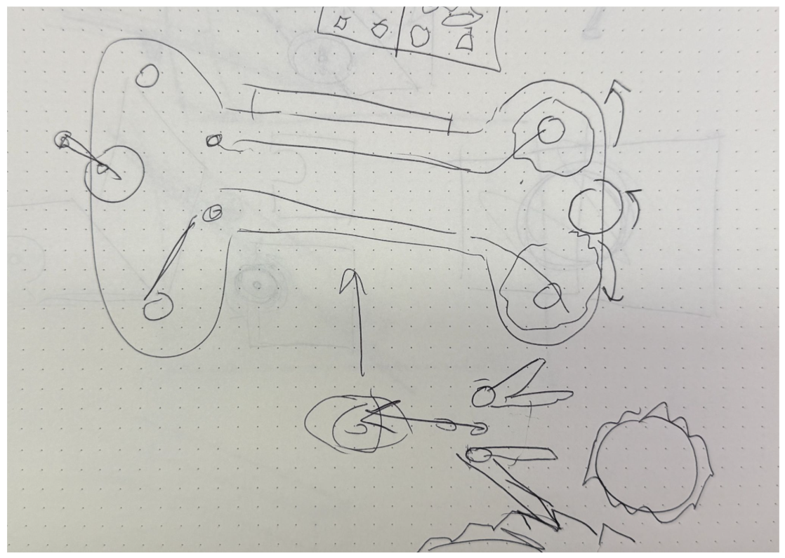
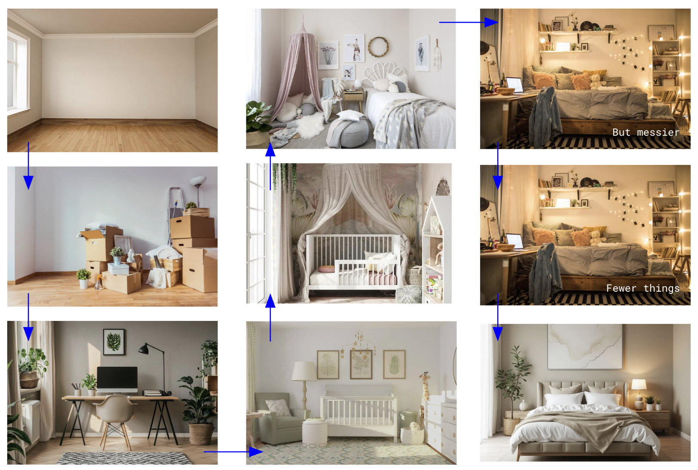

What I Have So Far
Click here for pitch deck.
No name yet. Probably won't have a name for the project until much later in the development.


Physical object & interaction
I'm pretty set on the film camera concept. I think the mechanism of a film camera is an uncanny physical representation of having control over time - through the advacing of film and triggering the shutter release the user has the ability to control the passage of time and freeze a moment. After speaking with Ian about my idea of harvesting hardware and parts from used disposable cameras, he quickly sketched out a possible structure of the handheld object (see sketch above) and listed out of a couple of possible places to start my prototyping.
- film: how many frames > how big the film roll needs to be > spacing of the gear mechanisms > how big the object body needs to be
- layers: I toyed with the idea of having dual layer film that advances simultaneously, allowing more layered and textured imagery/story.
Storyboard
Throughout the diffrent frames, I want to make sure that there are "easter egg" items that make cameos in the next frames or even a reappearance in a later stage of the room's life. Here are the major milestones I want to the project to exhibit:
- empty room: house waiting for new owners
- new owners moving in: moving boxes
- home office: unpacking boxes and setting up workspace
- nursery: preparing for a new member of the household
- toddler room: furniture for a bigger child but still holding traces of babyhood
- tween room: art work, getting messy, more advanced toys and accessories
- teen room: personal expression, independence, photo wall, college memorabilia, really messy room
- college student room: same things in the room, but more organized, somewhere to come home during break
- adult room: more mature, less personal items, somewhere to crash during visits home
- guest bedroom: neutral, welcoming, somewhere for visitors to feel at home, some traces of the previous occupant
- empty room: house waiting for new owners